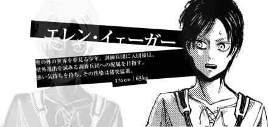
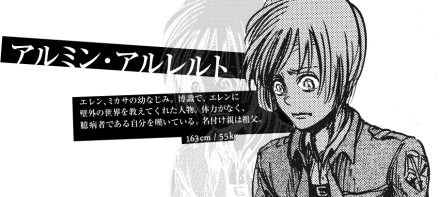

《进击的巨人》（進撃の巨人），是日本漫画家谏山创创作的少年漫画作品，于2009年在讲谈社旗下的漫画杂志《别册少年Magazine》上开始连载，至2021年4月9日完结。全139话 [66] 。 该作品曾获2011年“这本漫画真厉害！”男性榜第1名、“讲谈社漫画赏少年部门赏”等奖项 。2012年12月，该作正式宣布TV动画化，2013年4月6日，由WIT STUDIO改编的同名电视动画正式开始放送。 截止至2019年12月25日，单行本（含电子版）累计全球发行量突破1亿册 。 2021年12月，《进击的巨人》最终季最新话《断罪》将于2022年1月9日在日本电视台NHK综合频道播出 。
| 角色介绍 | 相关图片 |
|---|---|
| 艾伦·耶格尔 |  |
| 三笠·阿克曼 | |
| 阿明·阿诺德 |  |
艾伦·耶格尔，日本漫画《进击的巨人》及其衍生作品中的男主角。第104期训练兵团毕业生的No.5，后加入调查兵团。最后一任进击的巨人、始祖巨人、战锤巨人的宿主。出生在帕拉迪岛西甘锡纳区的少年。拥有强韧的精神力量与非凡的行动力，重视同伴，厌恶不自由的一切。少年时期对墙壁外的世界拥有比任何人都要强烈的憧憬。
三笠·阿克曼，日本漫画《进击的巨人》及其衍生作品中女主角。艾伦·耶格尔的青梅竹马，在儿时被艾伦救过一条命。无家可归时被艾伦父子带回了家，后二人经常一起活动，互相视对方为最重要的人。
阿明·阿诺德，日本漫画《进击的巨人》及其衍生作品中的角色。第104期训练兵团毕业生，后加入调查兵团成为利威尔班成员，在韩吉牺牲后继任为调查兵团第15任团长，最后一任超大型巨人的宿主。